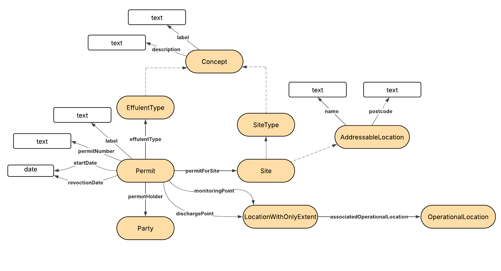

IRI: http://environment.data.gov.uk/ontology:Concept
IRI: http://environment.data.gov.uk/ontology:Location
IRI: http://environment.data.gov.uk/ontology:EffluentType
IRI: http://environment.data.gov.uk/ontology:Party
IRI: http://environment.data.gov.uk/ontology:Permit
IRI: http://environment.data.gov.uk/ontology:Site
IRI: http://environment.data.gov.uk/ontology:Waterbody
IRI: http://environment.data.gov.uk/ontology:associatedOperationalLocation
IRI: http://environment.data.gov.uk/ontology:dischargePoint
IRI: http://environment.data.gov.uk/ontology:effluentType
IRI: http://environment.data.gov.uk/ontology:monitoringPoint
IRI: http://environment.data.gov.uk/ontology:permitForSite
IRI: http://environment.data.gov.uk/ontology:permitHolder
IRI: http://environment.data.gov.uk/ontology:bodyText
IRI: http://environment.data.gov.uk/ontology:definition
IRI: http://environment.data.gov.uk/ontology:permitNumber
IRI: http://environment.data.gov.uk/ontology:revoctionDate
IRI: http://environment.data.gov.uk/ontology:startDate
This HTML document was obtained by processing the OWL ontology source code through LODE, Live OWL Documentation Environment, developed by Silvio Peroni .